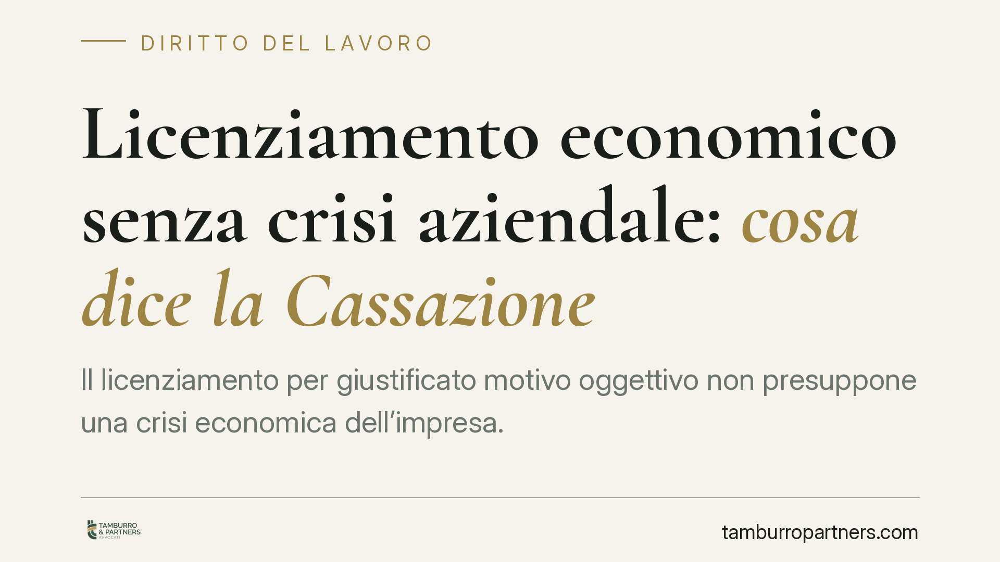

Licenziamento economico senza crisi aziendale: cosa dice la Cassazione
Il licenziamento per giustificato motivo oggettivo non presuppone una crisi economica dell'impresa. La Cassazione ribadisce che basta una ragione organizzativa concreta e verificabile, purché il datore dimostri l'impossibilità di ricollocare il lavoratore. Un principio che sposta il baricentro dalla contabilità aziendale alla serietà e trasparenza della scelta gestionale.

Il fatto
La Corte di Cassazione, Sezione Lavoro, torna su una questione ricorrente nel contenzioso del lavoro: per licenziare un dipendente per ragioni economiche serve sempre una crisi aziendale documentata?
La risposta dei giudici è netta: no. Il licenziamento per giustificato motivo oggettivo (l'ipotesi comunemente definita "economica") può reggersi anche su una semplice riorganizzazione produttiva, senza che l'impresa debba trovarsi in difficoltà finanziaria. Ciò che conta è che la scelta sia reale, non pretestuosa, e che il datore abbia verificato l'impossibilità di impiegare il lavoratore in altre mansioni.
Inquadramento normativo
Il riferimento è l'art. 3 della Legge n. 604 del 1966, che definisce il giustificato motivo oggettivo come quello "determinato da ragioni inerenti all'attività produttiva, all'organizzazione del lavoro e al regolare funzionamento di essa".
La formula normativa è ampia. Non richiede in alcun punto la prova di una crisi. La giurisprudenza consolidata — e la pronuncia in commento si inserisce in questo solco — chiarisce che il datore di lavoro è libero di riorganizzare l'impresa come ritiene più efficiente, anche solo per contenere i costi o migliorare la redditività. Il giudice non può sindacare l'opportunità della scelta imprenditoriale, tutelata dall'art. 41 della Costituzione (libertà di iniziativa economica).
Il controllo giudiziale resta però pieno su due profili: l'effettività della ragione organizzativa dedotta e il nesso causale tra quella ragione e la soppressione della specifica posizione del lavoratore licenziato.
L'obbligo di repêchage
Qui si concentra il cuore della decisione. Il repêchage — termine che indica l'obbligo di "ripescaggio", cioè di ricollocazione del dipendente — è condizione di legittimità del recesso.
Prima di licenziare, il datore deve verificare se esistano posizioni disponibili in azienda, anche in mansioni equivalenti o inferiori, compatibili con il bagaglio professionale del lavoratore. L'onere della prova grava interamente sul datore: non è il dipendente a dover indicare dove poteva essere impiegato, ma l'impresa a dover dimostrare che nessuna collocazione alternativa era possibile al momento del recesso.
Un licenziamento sorretto da una ragione organizzativa autentica ma privo della verifica di repêchage resta illegittimo.
Implicazioni pratiche
Per il datore di lavoro il messaggio è duplice. Da un lato, si conferma un margine di manovra ampio: la riorganizzazione non deve giustificarsi con bilanci in rosso. Dall'altro, la libertà si accompagna a un onere probatorio stringente. La motivazione del licenziamento deve essere circostanziata già nella lettera di recesso e sostenibile in giudizio con documenti e riscontri concreti.
Per il lavoratore, la pronuncia offre due leve difensive: contestare l'effettività della ragione organizzativa (dimostrando, ad esempio, che la posizione soppressa è stata poco dopo ricoperta da un nuovo assunto) e verificare il rispetto dell'obbligo di repêchage.
Il contenzioso, in questi casi, si gioca sui fatti più che sui principi. La differenza tra un recesso legittimo e uno annullabile passa dalla qualità della documentazione e dalla coerenza tra la ragione dichiarata e le scelte gestionali successive.
Cosa fare in concreto
- Datori di lavoro: formalizzate per iscritto la ragione organizzativa e conservate la documentazione (organigrammi, riparto mansioni, decisioni gestionali) che ne dimostri l'effettività.
- Datori di lavoro: prima del recesso, verificate e documentate l'assenza di posizioni alternative in azienda, incluse mansioni inferiori.
- Datori di lavoro: evitate nuove assunzioni su ruoli analoghi a quello soppresso nei mesi successivi: è l'indizio più frequente di licenziamento pretestuoso.
- Lavoratori: richiedete tempestivamente copia della lettera di recesso e valutate la coerenza della motivazione con l'organizzazione reale dell'azienda.
- Lavoratori: raccogliete elementi su eventuali posizioni disponibili o assunzioni successive e rispettate i termini di impugnazione (60 giorni per la contestazione stragiudiziale).
Conclusione
La distinzione tra riorganizzazione e crisi non è un dettaglio formale: ridefinisce ciò che il datore deve provare in giudizio. Consigliamo, in ogni caso di ristrutturazione con ricadute sul personale, una valutazione preventiva della sostenibilità probatoria del recesso.
---
*Contributo informativo a cura di Tamburro & Partners - Avv. Giuseppe Tamburro. Non costituisce parere legale.*
Ogni storia di lavoro ha i suoi tempi.
Se gestisci HR e vuoi un confronto su contenzioso, ispezioni o licenziamenti, scrivi allo studio. Ti rispondiamo entro un giorno lavorativo.